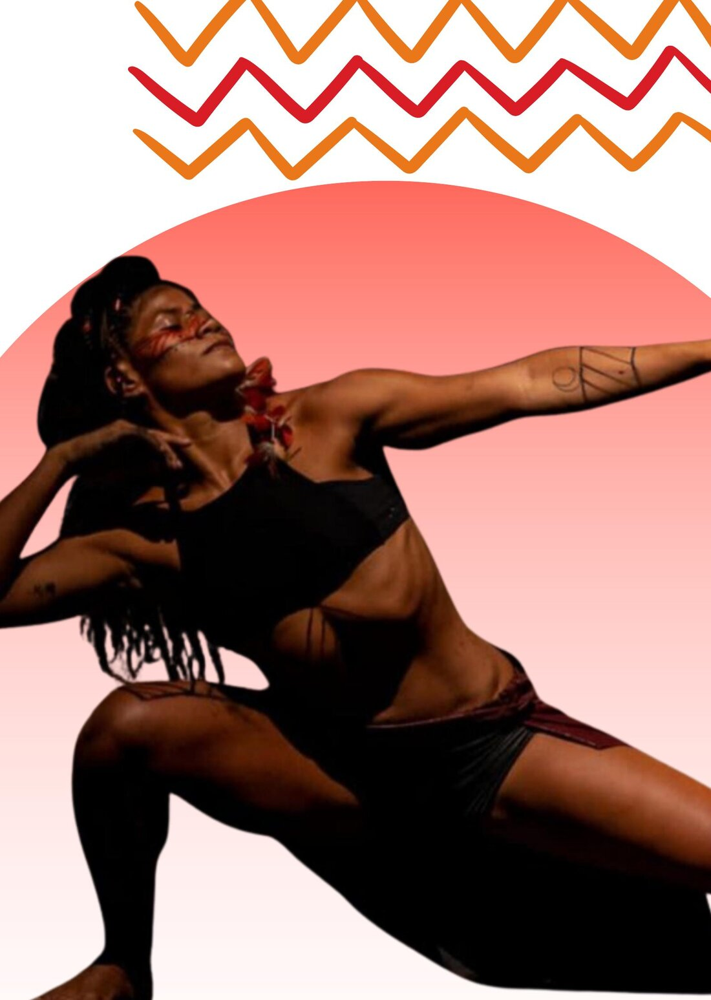

Integrante desde 2018
Corpo de Dança do Amazonas (CDA)
A CDA é uma companhia de dança contemporânea sediada no norte do Brasil, atualmente dirigida por Mário Nascimento, uma das maiores referências da dança brasileira. A companhia tem experiências com diversas linguagens artísticas.
“São anos de muito trabalho e crescimento artístico, incluindo trocas com diversos artistas de todo o país. Em nossos trabalhos no CDA, valorizamos profundamente a diversidade cultural do norte do país.”